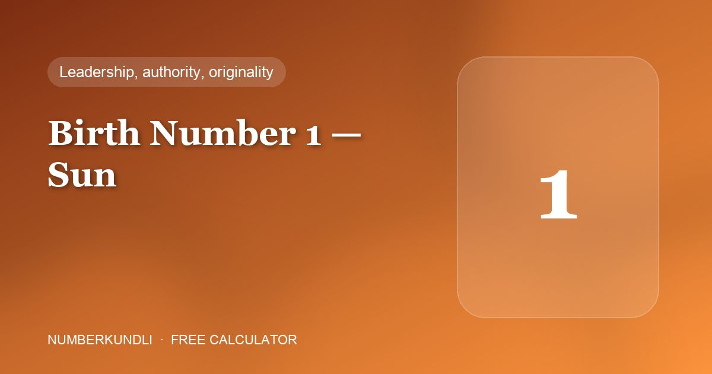

Birth Numbers 1–9
Your Birth number is the day of the month you were born, reduced to a single digit (29 → 2 + 9 = 11 → 2). Pick yours to see the mobile-number digits, PINs, wallpaper, cover and colour that suit it.
Your Birth number is the day of the month you were born, reduced to a single digit (29 → 2 + 9 = 11 → 2). Pick yours to see the mobile-number digits, PINs, wallpaper, cover and colour that suit it.